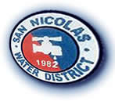

I'm Kathrina.

I'm experienced in Technical Support with a demonstrated history of working in the outsourcing/offshoring industry. Skilled in Cisco Networking, Business Communications, Business Administration, Travel & Tourism, and Project Management. Strong information technology professional with a Fulltime Course focused in Network and System Administration/Administrator from the University of the Philippines.
Udemy |
2019 |
Web Development Bootcamp 2019Aug 2019 - Present Course taught by Angela Yu, lead instructor at App Brewery - Londons's leading in-person programming bootcamp, which covers Front-End Web Development, HTML 5, CSS 3, Bootstrap 4, Javascript ES6, DOM Manipulation, jQuery, Bash Command Line, Git, GitHub and Version Control, Backend Web Development, Node.js, NPM, Express.js, EJS, REST, APIs, Databases, SQL, MongoDB, Mongoose, Web Design, Deployment with GitHub Pages, Heroku and MongoDB Atlas |
|
Accenture, Inc.Ilocos Norte, Philippines |
2018 |
IT Operations AssociateLead Apprentice Apr - May 2019 Lead a group of eight (8) agents including 2 SMEs in achieving their goals aside from the targets set by the project. Inspired team members to improve their skills and maximize their potential while enjoying their job and boosting their careers. Backup Lead on Duty Sep - Apr 2019 Coordinated with global leads and support teams during outages relating to Windows applications, company sites and applications, and network connectivity. Created and setup message of the days (MOTDs) and provided viable workaround and updates during outages and lockout/compliance weeks. Bootcamp Instructor Aug - Sep 2018 Trained newly hired employees regarding basic troubleshooting, account and active directory management. Conducted mock calls and call listening exercises to demonstrate and teach effective call listening and call handling techniques. Subject Matter Expert (SME) Apr - Aug 2018 Provided assistance to agents in troubleshooting advanced desktop/laptop issues regarding performance, compliance, and network connectivity through remote access. Remediated and updated machines in order to pass company’s security compliance through Windows SCCM. Voice Agent Jan - Apr 2018 Frontline support that dealt with Windows 10 and Mac OS issues through remote access. Installed/uninstalled/updated applications in computers running on Windows 10 or Mac OS and mobile devices with Android and iOS as necessary. Logged tickets with proper documentation and ensured timely follow up for incidents until the issue is resolved or escalated to the proper support team for further investigation and/or remediation. |
|

Sykes Enterprises, Inc.New Manila, Philippines |
2017 |
Technical Support Specialist for AT&T Tier 1.5Jan - Nov 2017 First-line support for advanced troubleshooting, diagnostics and provided solutions to network failures.
Did end-to-end trouble isolation and handled physical layer issues, verification of proper hardware and software setup, troubleshoot basic switch/router issues, resolved username and password problems, and assisted in
installing/uninstalling/ upgrading software applications. |
|

University of the PhilippinesQuezon City, Phillipines |
2016 |
Fulltime Course in Network and Systems Administration2016 - 2017 The Network and Systems Administration Track covers the design, implementation, and maintenance of computer networks. |
|
Northwestern UniversityLaoag City, Philippines |
2015 |
Master in Business Administration2013 - 2015 |
|

San Nicolas (IN) Water DistrictIlocos Norte, Philippines |
2013 |
Clerk Processor CMar 2013 - Apr 2016 Assisted in the overall accounting process from vouching to preparation of financial statements. |
|

FreelanceIlocos Norte, Philippines |
|
Tour GuideJan 2012 - Dec 2017 Part time tour guide in Ilocos Norte and Ilocos Sur - handled small to large group of tourists from group of friends and families, students and professionals, locals and foreigners - with extensive knowledge of the historical background to sites, myths, trivia, the best places to stay, eat, and have fun! |
|
Mariano Marcos State UniversityBatac City, Philippines |
2012 |
Bachelor of Science in Business Administration - Major in Management Accounting2010 - 2012 |
|